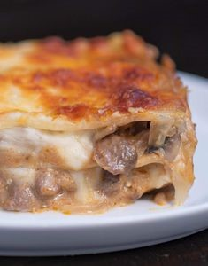

Beef Stroganoff Lasagna Recipe
What is Beef Stroganoff Lasagna?
There is something truly irresistible about two popular dishes that have come together for one recipe. From Bagnet Sisig to even the classic Ice Cream Cake, these kinds of recipes are definitely worth trying because truly— how could you say no to having the best of both worlds? If you've ever wondered what it would be like to have the savory, delicious Beef Stroganoff Lasagna, this recipe is for you!
Ingredients
1 lb beef sirloin
8 ounces lasagna
1 onion
2 cups chopped mushroom
3 tablespoons butter
8 ounces mozzarella cheese
1 pack
2 teaspoons paprika
1/2 cup sour cream
2 1/2 cups water
Instructions / How to Cook
1. Cook lasagna based on package instructions. Set aside.
2. Make the sauce by melting the butter in a pan. Add beef sirloin and then cook until it turns light brown.
3. Add onion and mushroom. Continue sauteeing for 3 minutes.
4. Combine Knorr Cream of Mushroom with 2 ½ cups water. Stir until well blended. Pour the mixture into the pan. Stir and cook until the sauce thickens.
5. Add paprika. Cook for another 3 minutes.
6. Turn the heat off and then add sour cream. Stir to mix all the ingredients.
7. Preheat the oven to 350F. Assemble the lasagna in the baking pan starting with the stroganoff followed by the lasagna. Top with mozzarella. Continue with the pattern until all ingredients are used up.
8. Bake for 30 minutes.
9. Remove from the oven and serve warm with garlic bread. Share and enjoy!